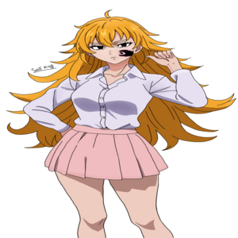
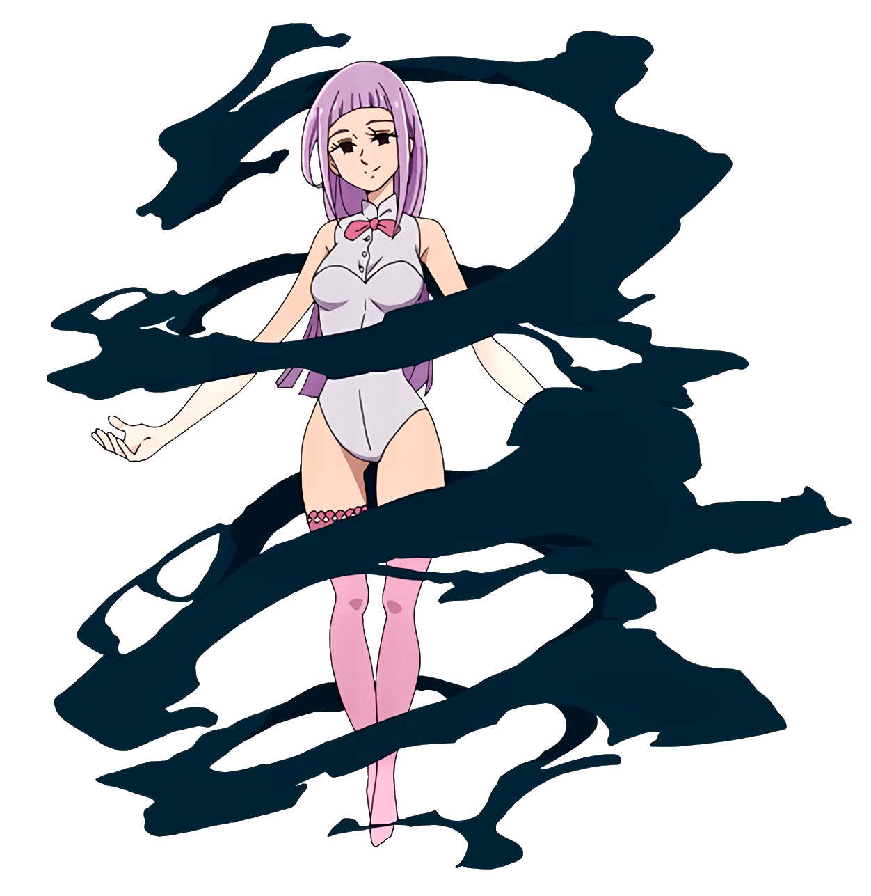
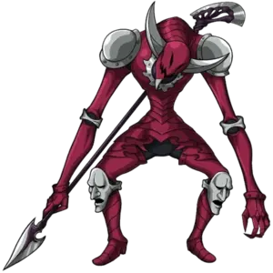
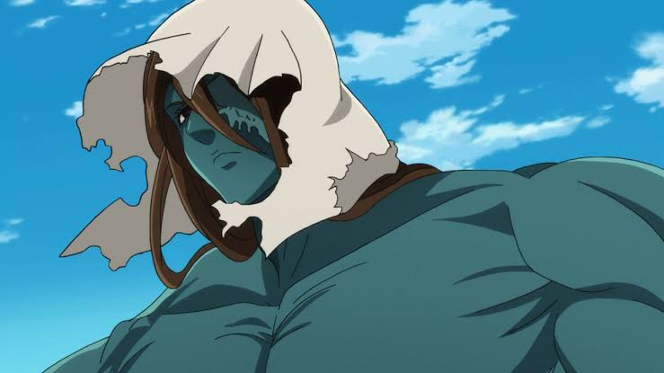
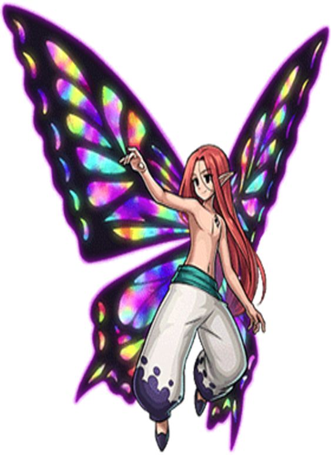
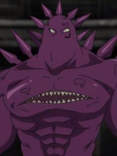

Os 10 Mandamentos

Grayroad é um Demônio de nível superior, pertencente ao Clã dos Demônios. Ela possui várias cabeças, sendo uma das características mais marcantes de seu visual. Sua habilidade principal é o “Curse”, que permite colocar maldições em pessoas que quebram determinadas condições. Grayroad é extremamente antiga, tendo vivido durante a época da Guerra Santa de 3.000 anos atrás. Ela faz parte dos Dez Mandamentos, recebendo o Mandamento do Pacifismo. O Mandamento do Pacifismo tem um efeito perigoso: qualquer pessoa que mate outra na presença de Grayroad tem sua vida drasticamente reduzida. Ela é capaz de criar e controlar pequenos demônios, podendo utilizar seus corpos para atacar ou se deslocar. Grayroad não possui uma forma humanoide convencional, diferentemente de vários outros membros importantes do Clã dos Demônios. Ela tem uma relação de lealdade com o Rei Demônio, assim como os demais membros dos Dez Mandamentos. Apesar de sua aparência incomum, Grayroad é considerada uma ameaça séria, principalmente por causa de suas habilidades mágicas e de seu Mandamento.

Estarossa é, na verdade, Mael, um dos Quatro Arcanjos do Clã das Deusas. Ele é o irmão mais novo de Ludociel e irmão de Tarmiel e Sariel. A identidade de “Estarossa” surgiu por causa de uma alteração nas memórias causada por Gowther. Estarossa carregava o Mandamento do Amor, originalmente pertencente a Mael. Seu poder mágico é o Full Counter, mas, diferente do Meliodas, ele consegue refletir principalmente ataques físicos. Ele foi responsável por matar Meliodas em uma de suas formas mais importantes durante a história? Não: essa parte é frequentemente confundida pelos fãs. A relação entre os dois é muito mais ligada à identidade falsa de Estarossa e ao passado de Mael. Mael era considerado um dos seres mais poderosos do Clã das Deusas e possuía o Sunshine, poder que depois passou para Escanor. Quando Mael recupera suas memórias, ele percebe que grande parte de sua existência como Estarossa foi construída sobre uma mentira. O nome “Estarossa” foi usado para esconder a verdadeira identidade de Mael e fazer os outros acreditarem que ele era filho do Rei Demônio. A revelação de que Estarossa é Mael é uma das maiores reviravoltas de Nanatsu no Taizai.

Zeldris é o irmão mais novo de Meliodas e também é filho do Rei Demônio. Ele é um dos Dez Mandamentos, ocupando o posto de líder do grupo. Seu Mandamento é o Piedade (Piety). Quem demonstra deslealdade diante dele pode acabar sendo obrigado a servi-lo. Zeldris possui uma relação muito próxima com Gelda, uma vampira e seu grande amor. Apesar de sua aparência fria, Zeldris é extremamente leal às pessoas que ama, especialmente Gelda e Meliodas. Ele recebeu o título de “Executor” por sua habilidade e disposição para cumprir as ordens do Rei Demônio. Zeldris utiliza uma espada como sua principal arma e é um excelente espadachim. Ele possui uma habilidade chamada Ominous Nebula, que cria uma espécie de campo de atração ao seu redor, puxando inimigos para perto e atacando-os em alta velocidade. Zeldris também consegue utilizar Full Counter, mas sua versão é diferente da técnica de Meliodas. Ele é considerado um dos personagens mais poderosos entre os demônios e consegue enfrentar adversários de altíssimo nível. Zeldris e Meliodas tiveram uma relação complicada por causa das expectativas do Rei Demônio, mas, no fundo, os dois se importam profundamente um com o outro. Uma das maiores ironias do personagem é que, mesmo sendo conhecido como um guerreiro extremamente cruel, seu principal objetivo pessoal era viver em paz com Gelda.

Monspeet é um dos Dez Mandamentos e representa o Mandamento da Reticência. Seu Mandamento faz com que aqueles que revelam sentimentos ou pensamentos ocultos de maneira inadequada sejam punidos, dependendo das circunstâncias. Ele é extremamente leal a Derieri, com quem possui uma relação muito próxima. Monspeet é conhecido por ser calmo, educado e reservado, principalmente quando comparado a outros membros dos Dez Mandamentos. Ele possui uma das maiores capacidades mágicas entre os demônios e é especialista em magia de fogo. Sua técnica Trick Star permite trocar a posição de objetos ou pessoas, tornando seus ataques bastante imprevisíveis. Monspeet possui seis corações, assim como outros demônios de alto nível. Destruir apenas um deles não é suficiente para matá-lo. Ele é capaz de utilizar a Hellblaze, uma chama negra característica dos demônios de alto nível. Monspeet tinha sentimentos por Derieri, mas não conseguia confessá-los diretamente. Uma das partes mais tristes de sua história é justamente sua relação com Derieri: os dois demonstravam grande carinho um pelo outro, mas demoraram muito para admitir seus sentimentos. Antes de se tornar um dos Dez Mandamentos, Monspeet já era um demônio extremamente poderoso e experiente. Apesar de sua aparência intimidadora, Monspeet é um dos personagens mais gentis e protetores entre os Dez Mandamentos.

Derieri é uma das integrantes mais poderosas dos Dez Mandamentos e pertence ao Clã dos Demônios. Seu Mandamento é o da Pureza, e sua presença faz com que ela seja uma guerreira extremamente perigosa. Sua habilidade especial, Combo Star, aumenta o poder de seus golpes conforme ela consegue acertar vários ataques seguidos. Derieri é muito próxima de Monspeet. Apesar de seu jeito agressivo, ela demonstra um forte carinho por ele e confia bastante nele. Ela costuma agir de forma impulsiva e não tem muita paciência para conversas longas ou formalidades. Derieri possui uma grande quantidade de poder demoníaco e consegue assumir formas mais poderosas durante suas batalhas. Um detalhe interessante é que, por trás de sua personalidade bruta, ela possui um lado bastante emocional e se importa profundamente com as pessoas que ama.

Melascula é um dos Dez Mandamentos, servindo diretamente ao Rei Demônio. Seu Mandamento é o Mandamento da Fé. Quem presencia uma pessoa demonstrando infidelidade ou falta de fé diante dela pode sofrer uma punição ligada às chamas negras. Ela é uma demônio de alto nível e possui uma aparência bastante diferente de sua verdadeira natureza. Sua aparência humana é, na verdade, uma forma que ela utiliza. Melascula originalmente é uma serpente, e sua forma demoníaca revela muito mais de sua verdadeira natureza. Ela possui uma habilidade chamada Hell Gate, relacionada à abertura de portais entre diferentes locais e ao mundo dos mortos. Melascula consegue manipular almas, podendo retirá-las dos corpos e utilizar suas propriedades sobrenaturais. Ela tem uma forte relação com Galand, outro membro dos Dez Mandamentos. Os dois frequentemente aparecem juntos e possuem uma dinâmica bastante peculiar. Apesar de sua aparência jovem e sedutora, Melascula é muito antiga, tendo vivido durante a época da Guerra Santa. Ela demonstra uma personalidade cruel, provocadora e bastante confiante, gostando de brincar com seus adversários antes de derrotá-los. Uma das características mais interessantes dela é sua capacidade de usar almas como fonte de poder, algo que combina diretamente com sua natureza de demônio e com suas técnicas. Quando utiliza níveis maiores de poder, sua aparência muda drasticamente, tornando-se muito mais monstruosa. Melascula aparece principalmente como antagonista durante os acontecimentos relacionados à Nova Guerra Santa. Ela possui uma das habilidades mais perigosas entre os Mandamentos porque seus poderes podem afetar diretamente a alma, e não apenas o corpo. Seu design mistura elementos de serpente e características humanas, reforçando a ideia de que sua aparência feminina é apenas uma manifestação de sua verdadeira forma. Melascula é uma das personagens que mostram que os Dez Mandamentos não dependem apenas de força física: habilidades especiais e poderes sobrenaturais também podem ser extremamente perigosos.

Galand é um dos Dez Mandamentos e serve ao Rei Demônio. Seu Mandamento é o Mandamento da Verdade. Quem mente na presença dele pode ser transformado em pedra. Galand possui uma força física absurda e é conhecido por lutar principalmente usando força bruta e sua lança, chamada Gamon. Ele é extremamente confiante e gosta de provocar seus adversários, muitas vezes subestimando os inimigos. Galand possui uma habilidade chamada Critical Over, que aumenta drasticamente seu poder mágico e físico. Quando utiliza seu poder máximo, Galand assume sua forma verdadeira, ficando muito maior e mais monstruoso. Uma de suas características mais marcantes é sua armadura dourada, que combina com seu enorme tamanho e aparência de guerreiro. Galand é um dos primeiros Mandamentos a enfrentar diretamente Meliodas após seu retorno ao poder. Ele possui uma relação próxima com Melascula, e os dois frequentemente aparecem juntos durante a história. Galand é extremamente competitivo. Ele gosta de transformar as lutas em uma espécie de jogo e costuma estabelecer regras para tornar os confrontos mais interessantes. Apesar de ser poderoso, sua autoconfiança excessiva acaba sendo uma de suas maiores fraquezas. Galand tem mais de 3.000 anos, tendo participado dos acontecimentos da antiga Guerra Santa. Sua personalidade é bastante exagerada: ele é barulhento, arrogante, agressivo e muitas vezes age de maneira impulsiva. O Mandamento da Verdade combina perfeitamente com sua personalidade, já que Galand gosta de desafiar os outros e colocá-los em situações nas quais qualquer mentira pode ser fatal. Galand é lembrado principalmente por sua luta contra Escanor, que mostra uma diferença impressionante entre a força do Mandamento e o poder do Pecado do Orgulho.

Drole é um dos Dez Mandamentos e também foi um dos maiores líderes do Clã dos Gigantes. Seu Mandamento é o Mandamento da Paciência. Aqueles que demonstram impaciência diante dele podem sofrer uma punição relacionada ao seu Mandamento. Drole é conhecido como o Rei dos Gigantes e possui um tamanho gigantesco, mesmo para os padrões de seu próprio clã. Ele possui quatro braços, uma característica marcante de sua aparência. Drole perdeu o olho esquerdo durante acontecimentos relacionados à antiga Guerra Santa. Seu poder está fortemente ligado à terra. Ele consegue manipular o solo e criar enormes estruturas rochosas. Uma de suas técnicas mais conhecidas é o Drole's Dance, uma dança que permite aumentar sua conexão com a terra e elevar seu poder. Drole possui uma habilidade chamada Creation, que permite manipular a terra e criar diferentes formas e estruturas. Apesar de ser um dos Dez Mandamentos, Drole nem sempre concordava com as atitudes do Clã dos Demônios. Durante a antiga Guerra Santa, Drole inicialmente lutou contra os Sete Pecados Capitais, mas posteriormente passou a compreender melhor seus ideais. Drole teve um papel importante no treinamento de Diane, ajudando-a a compreender melhor sua força e sua identidade como gigante. Ele também treinou King, principalmente através de um teste envolvendo Diane, King e Gowther. Drole possui uma personalidade muito mais séria e reflexiva do que outros Mandamentos, como Galand. Seu visual foi inspirado na ideia de um gigante guerreiro, combinando seu enorme tamanho com quatro braços e uma aparência extremamente robusta. Mesmo sendo um dos personagens mais poderosos do Clã dos Gigantes, Drole demonstra que força física não é tudo, valorizando experiência, estratégia e compreensão do mundo.

Gloxinia foi o primeiro Rei das Fadas e também um dos Dez Mandamentos. Ele ocupava o posto do Mandamento do Repouso. Sua arma sagrada é Basquias, uma lança espiritual extremamente poderosa. Basquias pode assumir diversas formas, sendo usada tanto para ataque quanto para defesa. Gloxinia possui asas de fada, mas inicialmente elas são pequenas. Com o desenvolvimento de seus poderes, suas asas ficam muito mais impressionantes. Antes de se tornar um dos Dez Mandamentos, Gloxinia era o Rei da Floresta das Fadas. Ele tinha uma irmã chamada Gerheade. Gloxinia desenvolveu uma forte amizade com Drole, o antigo Rei dos Gigantes. Os dois passaram a fazer parte dos Dez Mandamentos e lutaram juntos por muito tempo. Gloxinia inicialmente guardava muito ressentimento pelos humanos por causa de acontecimentos trágicos de seu passado. Uma das características mais marcantes dele é a mudança entre sua personalidade mais brincalhona e seu lado extremamente sério quando luta. Seu poder mágico é chamado Disaster, que está relacionado ao controle e à manipulação da vida vegetal. Gloxinia aparece principalmente durante os acontecimentos relacionados à Guerra Santa e às memórias do passado.

Fraudrin é um dos Dez Mandamentos e ocupa o lugar de substituto de Gowther. Ele representa o Mandamento do Altruísmo. Fraudrin é um demônio de aparência gigantesca e possui uma força física impressionante. Sua habilidade permite aumentar ou reduzir o próprio tamanho, o que também influencia sua força. Ele consegue utilizar o corpo de outras pessoas como recipiente, sendo capaz de possuir hospedeiros. Fraudrin passou muitos anos dentro do corpo de Dreyfus, manipulando sua aparência e ações. Ele teve uma relação importante com Hendrickson, influenciando acontecimentos importantes do Reino de Liones. Apesar de ser um demônio, Fraudrin desenvolve sentimentos por Dreyfus e Hendrickson ao longo da história. Ele não possui o mesmo nível de poder que alguns dos principais Mandamentos, como Zeldris, Estarossa ou Mael. Um dos momentos mais importantes de Fraudrin acontece quando ele percebe que não deseja mais continuar seguindo o caminho dos demônios. Seu destino está diretamente ligado ao confronto contra Meliodas e os Sete Pecados Capitais. Fraudrin é um personagem interessante porque começa como antagonista, mas sua personalidade e suas escolhas ficam mais complexas no decorrer da história.